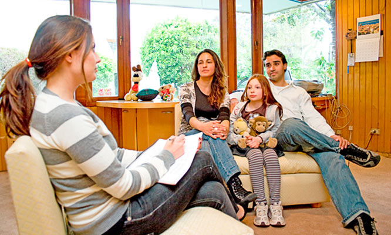

Atencion Psicologica
La atención es una cualidad de la percepción que funciona como una especie de filtro de los estímulos ambientales, evaluando cuáles son los más relevantes y dotándolos de prioridad para un procesamiento más profundo.

Meditacion Familiar
Es un sistema de resolución de conflictos a que llegan las partes, ayudadas por un tercero imparcial llamado mediador familiar. Los ayuda a obtener una solución que surja de ellos mismos, a través de sesiones realizadas fuera del tribunal.